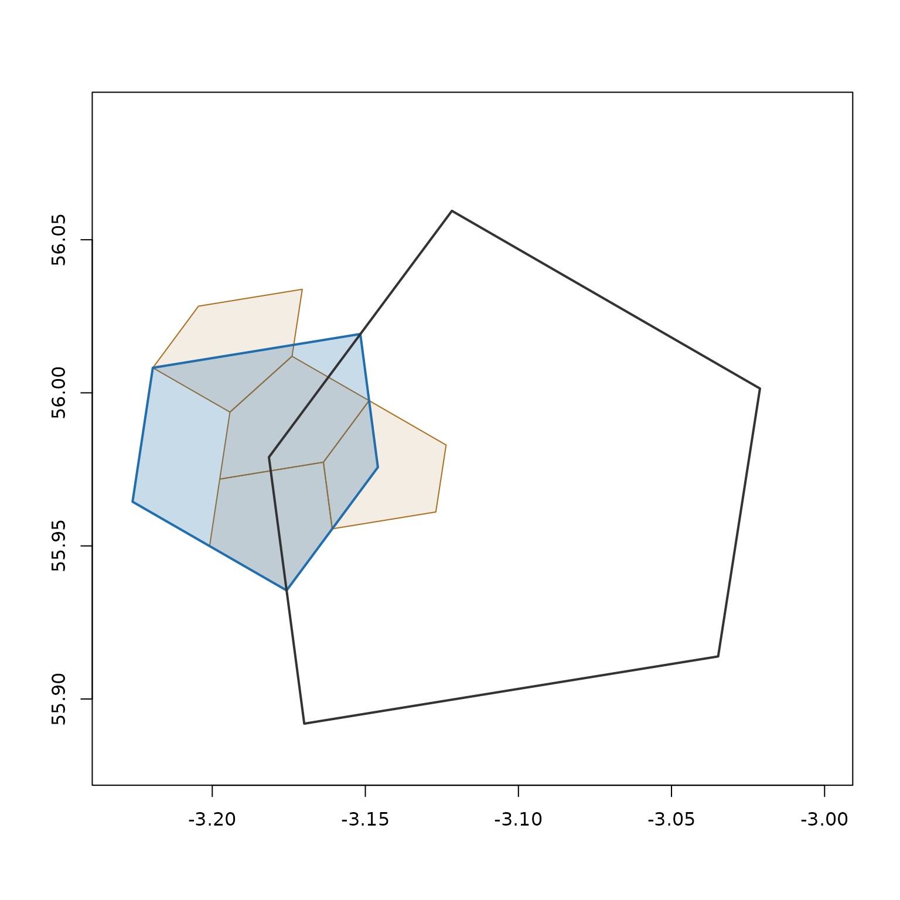
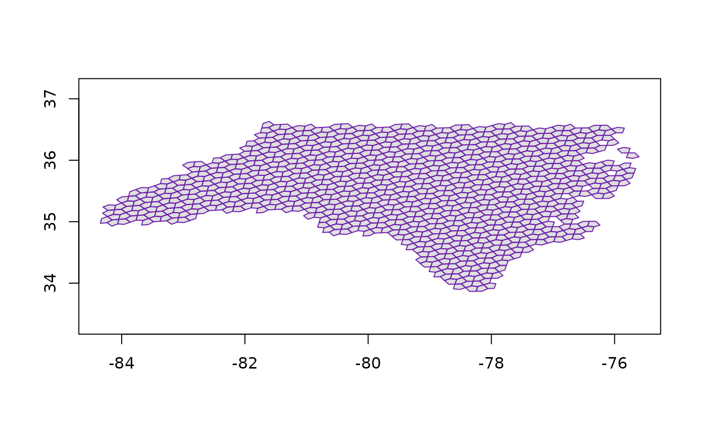

Index a point
Map a longitude/latitude coordinate to a cell at a given resolution (0–30). Higher resolutions produce smaller cells.
cell <- a5_lonlat_to_cell(-3.19, 55.95, resolution = 10)
cell
#> <a5_cell[1]>
#> [1] 6344be8000000000Convert back to the cell centre point:
a5_cell_to_lonlat(cell)
#> <wk_xy[1] with CRS=OGC:CRS84>
#> [1] (-3.183746 55.9806)Cell boundaries
Get the boundary polygon for one or more cells:
boundary <- a5_cell_to_boundary(cell)
boundary
#> <wk_wkb[1] with CRS=OGC:CRS84>
#> [1] <POLYGON ((-3.175718 55.93546, -3.145905 55.97569, -3.151641 56.01921, -3.219413 56.00818, -3.226037 55.96443, -3.175718 55.93546...>
plot(boundary, col = "#206ead20", border = "#206ead", asp = 1)Boundaries are returned as wk_wkb vectors by default
(set format = "wkt" for WKT). Both integrate directly with
sf, terra, and other spatial tooling via the wk package.
Hierarchy and compaction
A5 is a hierarchical grid: every cell has a parent at a coarser resolution and 4 children at the next finer resolution.
parent <- a5_cell_to_parent(cell)
parent
#> <a5_cell[1]>
#> [1] 6344be0000000000
children <- a5_cell_to_children(cell)
children
#> <a5_cell[4]>
#> [1] 6344be2000000000 6344be6000000000 6344bea000000000 6344bee000000000We can visualise the relationship: the parent (dark outline) contains our cell (blue fill), which in turn contains its 4 children (orange):
plot(NULL, xlim = c(-3.23, -3), ylim = c(55.98, 55.99),
xlab = "", ylab = "", asp = 1
)
plot(a5_cell_to_boundary(a5_cell_to_children(cell)),
col = "#ad6e2020", border = "#ad6e20", add = TRUE)
plot(a5_cell_to_boundary(cell), col = "#206ead40", border = "#206ead",
lwd = 2, add = TRUE)
plot(a5_cell_to_boundary(parent), border = "#333333", lwd = 2, add = TRUE)
Cell area decreases geometrically: each level is roughly 4x smaller.
a5_cell_area(0:5)
#> Units: [m^2]
#> [1] 4.250547e+13 8.501094e+12 2.125273e+12 5.313184e+11 1.328296e+11
#> [6] 3.320740e+10Compact and uncompact
When a complete set of siblings is present, a5_compact()
merges them back into their shared parent. This is the inverse of
a5_cell_to_children() and is useful for reducing the size
of large cell sets without losing coverage.
children
#> <a5_cell[4]>
#> [1] 6344be2000000000 6344be6000000000 6344bea000000000 6344bee000000000
a5_compact(children)
#> <a5_cell[1]>
#> [1] 6344be8000000000
# round-trips back to the original
a5_uncompact(a5_compact(children), resolution = 11)
#> <a5_cell[4]>
#> [1] 6344be2000000000 6344be6000000000 6344bea000000000 6344bee000000000Many a5R functions return compacted output automatically. For
example, a5_grid_disk() and a5_spherical_cap()
compact their results; use a5_uncompact() when you need a
uniform-resolution grid (see Traversal
below).
Traversal
Find neighbouring cells by hop count with
a5_grid_disk(), or by great-circle distance with
a5_spherical_cap():
disk <- a5_grid_disk(cell, k = 10)
cap <- a5_spherical_cap(cell, radius = 50000)
plot(a5_cell_to_boundary(cap), col = "#6ead2020", border = "#6ead20", asp = 1)
plot(a5_cell_to_boundary(disk), col = "#206ead20", border = "#206ead", asp = 1)Both functions return a compacted cell vector:
sibling groups are merged into coarser parent cells to save space. To
recover a uniform grid at the original resolution, pass the result
through a5_uncompact():
disk_grid <- a5_uncompact(disk, resolution = a5_get_resolution(cell))
plot(a5_cell_to_boundary(disk_grid), col = "#206ead20", border = "#206ead", asp = 1)Converting geometries to a5 cells
a5_polygon_to_cells() returns the cells whose centres
lie inside a polygon. It accepts any geometry that wk can handle (a
wk::rct() bounding box, a WKT or WKB polygon, an
sf / sfc feature) and also terra
SpatVector polygons.
cells <- a5_polygon_to_cells(wk::rct(-3.3, 55.9, -3.1, 56.0), resolution = 12)
length(cells)
#> [1] 36
plot(a5_cell_to_boundary(cells), col = "#206ead20", border = "#206ead", asp = 1)The returned vector is sorted and compacted: whenever four sibling
cells all sit inside the polygon, they are merged into their parent so
the result uses fewer slots without losing coverage. Call
a5_uncompact() to expand back to a uniform grid at the
target resolution:
cells_uncom <- a5_uncompact(cells, 12)
length(cells_uncom)
#> [1] 69
plot(a5_cell_to_boundary(cells_uncom), col = "#206ead20", border = "#206ead", asp = 1)
Multi-part inputs are handled natively: a MULTIPOLYGON
or an sfc of multiple polygons returns the union of cells
across all parts, and a POLYGON with holes returns the
outer ring’s cells with the hole cells properly subtracted.
library(sf)
#> Linking to GEOS 3.12.1, GDAL 3.8.4, PROJ 9.4.0; sf_use_s2() is TRUE
demo(nc, ask = FALSE, echo = FALSE)
nca5 <- a5_polygon_to_cells(nc, resolution = 9) |>
a5_uncompact(9)
plot(a5_cell_to_boundary(nca5), col = "#03030320", border = "#6d20adff", asp = 1)
Tracing a line
a5_linestring_to_cells() returns the cells whose
pentagons are crossed by a great-circle polyline. Output is in discovery
order along the path. Consecutive waypoints are connected by
great-circle arcs, so antimeridian-crossing routes work
transparently.
Multi-part inputs (MULTILINESTRING or an
sfc of several linestrings) are handled natively:
per-feature outputs are concatenated in feature order with first-seen
deduplication.
To show what cell-by-cell tracing looks like, we can write a short
phrase as a MULTILINESTRING (one stroke per letter) and ask
A5 to fill in the cells:
a5R_strokes <- wk::wkt(
"MULTILINESTRING (
(1.8 52.5, 1.2 52.8, 0.6 52.5, 0.4 52, 0.6 51.5, 1.2 51.2, 1.8 51.5, 2 52, 1.8 52.5, 2 51.2),
(5 53, 3.5 53, 3.5 52.2, 4 52.2, 4.7 52, 5 51.6, 4.7 51.2, 4 51, 3.5 51.1),
(6.5 51, 6.5 53, 7.5 53, 8 52.8, 8.2 52.5, 8 52.2, 7.5 52, 6.5 52, 8.2 51)
)"
)
cells <- a5_linestring_to_cells(a5R_strokes, resolution = 9)
length(cells)
#> [1] 182
plot(a5_cell_to_boundary(cells),
col = "#206ead80", border = "#37af6d", asp = 1)Each stroke is one continuous linestring; the function walks the great-circle path, expanding cell neighbours along the way, and returns the union across all strokes.